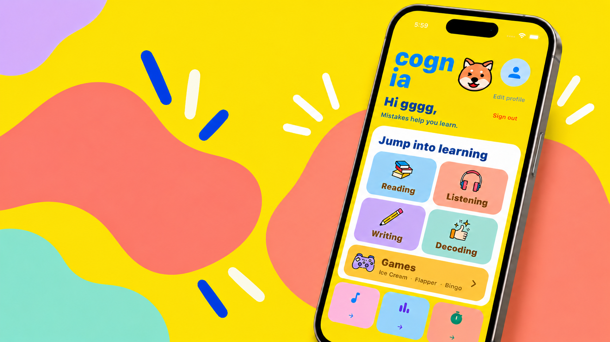

AI PRODUCT · INTERACTION · BUILDING
我做的
项目。
我在做 AI 产品、交互设计与工程实验。
01 — FEATUREDCOGNIA

TEAM PROJECT / 2026CHILDREN’S ENGLISH LEARNING APP
CognIA
学习模块、交互设计与前后端集成。
02—04 — MORE WORKSMALL COLLECTION
AI 产品、交互
以及一些实验。